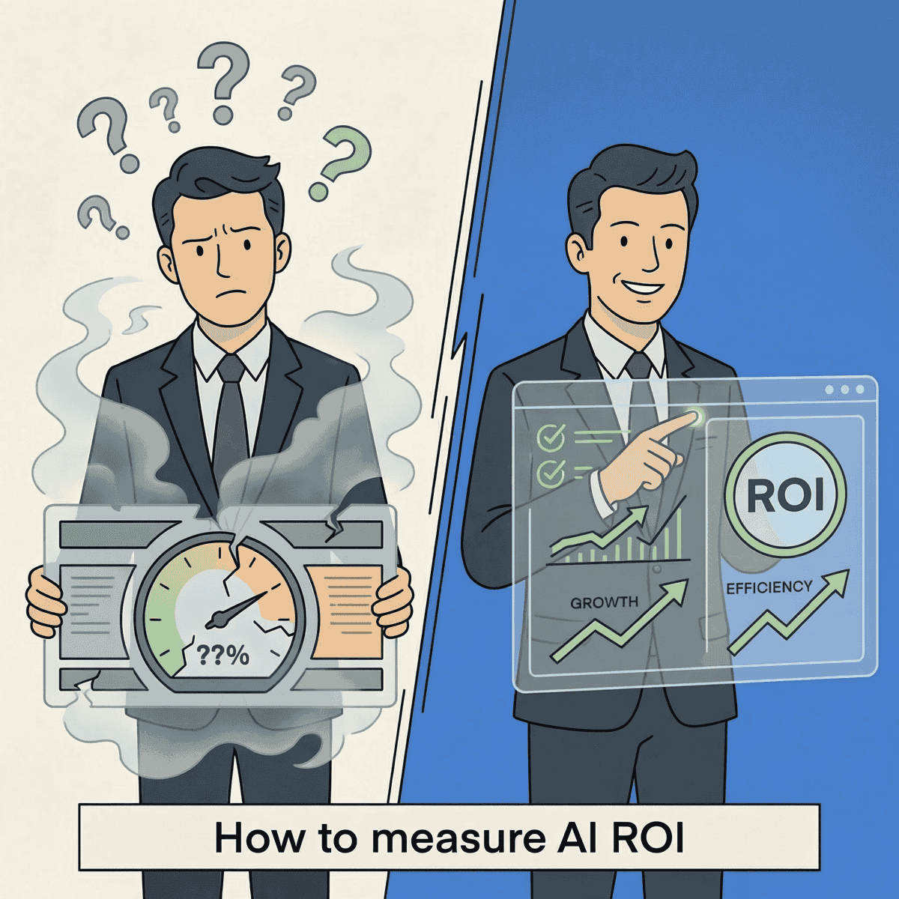

How to Measure AI ROI That Actually Matters

TL;DR
- 77% of organizations deploying AI can’t prove it delivers value—not because AI doesn’t work, but because they’re measuring wrong
- The METR study found developers felt 20% faster while actually being 19% slower—this perception gap is happening at the organizational level too
- High performers (just 6% of companies) measure across three pillars: financial returns, operational efficiency, and strategic positioning
- Start with baselines before deployment—you can’t prove improvement without “before” data
Here’s a statistic that should make every executive uncomfortable: 77% of organizations deploying AI cannot prove whether it delivers value.
Not “haven’t measured yet.” Cannot prove.
Meanwhile, your competitors are claiming AI transformed their operations. Your board wants to know when you’ll see returns on that seven-figure investment. And your team swears the new tools are making them faster.
But here’s the uncomfortable truth: they might be wrong about that last part. A METR study from July 2025 found that developers expected AI to speed them up by 24%. It actually made them 19% slower. Yet after the experiment, they still believed it had sped them up by 20%.
That’s not a rounding error. That’s organizational self-deception at scale.
The measurement crisis is real
The numbers are stark. 95% of enterprise GenAI pilots fail to achieve measurable financial returns within six months, according to MIT’s “The GenAI Divide” report.
And it’s getting worse, not better. 42% of companies scrapped most of their AI initiatives in 2025, up from 17% the year before, according to S&P Global.
That’s not a technology problem. That’s a measurement problem.
Only 6% of organizations qualify as “AI high performers”—those seeing 5% or more EBIT impact from AI, according to McKinsey’s 2025 State of AI report. What separates them from the 94%? They measure differently.
The gap between AI leaders and everyone else isn’t about technology. It’s about knowing what to measure.
— Clarke Bishop
Why traditional metrics fail
Most organizations make the same mistakes when trying to measure AI ROI.
They measure activity, not outcomes. “We processed 10,000 queries last month” sounds impressive until you ask: did those queries create value? Did they replace work that needed doing? Or did they just generate busy work that justified the investment?
They skip the baseline. If you didn’t measure cycle time, error rates, and costs before deploying AI, you can’t prove AI improved them. Hope is not a measurement strategy.
They trust feelings over facts. The METR study is a warning shot. Your team believes AI makes them faster. They’re probably wrong. 66% of developers cite AI’s “almost correct” solutions as their biggest time sink because debugging subtle errors takes longer than writing code from scratch.
They expect results too fast. 53% of investors expect positive ROI in six months or less. That’s unrealistic for most enterprise AI deployments. Realistic timelines are 3-6 months for initial indicators, 12-18 months for strategic returns.
The Three-Pillar Framework
High performers don’t just measure cost savings. They measure across three dimensions that together tell the complete story.
Pillar 1: Financial returns
This is where most organizations stop—and where most get it wrong. Financial returns include:
- Infrastructure and license costs — What are you actually spending?
- Operational savings — What costs have decreased? (Prove it with before/after data)
- Revenue attribution — Can you trace new revenue to AI capabilities?
- Time to value — How long from deployment to measurable returns?
The trap here is counting only savings while ignoring the cost of integration, training, and ongoing maintenance. I’ve seen organizations claim $500K in savings while spending $800K to achieve them.
Pillar 2: Operational efficiency
This is where the perception gap lives. You need hard metrics, not team sentiment:
- Cycle time reduction — How long do tasks take now vs. before AI?
- Error rates — Are mistakes going up or down? (Include AI-generated errors)
- Throughput changes — Are you producing more with the same resources?
- Quality metrics — What do customers actually experience?
A mid-market SaaS company I worked with tracked their AI coding tools carefully. They found a 15% efficiency gain in initial development—offset by a 20% increase in bugs caught in QA. Net impact? Negative until they adjusted their review processes.
Pillar 3: Strategic positioning
Some AI value doesn’t show up on this quarter’s P&L:
- Competitive capabilities — What can you do now that you couldn’t before?
- Speed to market — Are you shipping faster than competitors?
- Team capacity — Is AI freeing your best people for higher-value work?
- Knowledge retention — Are you capturing expertise that would otherwise walk out the door?
These metrics matter, but they’re not a substitute for Pillars 1 and 2. Strategic value that never converts to financial or operational impact isn’t value—it’s hope.
If you can’t measure it, you can’t manage it. And if you can’t manage it, you’re probably in the 77%.
— Clarke Bishop
The measurement playbook
Here’s how to actually implement proper AI ROI tracking.
Step 1: Establish baselines before deployment
This is non-negotiable. Measure current state for 3-6 months minimum before AI deployment:
- Cycle times for key processes
- Error rates and quality metrics
- Costs per unit of output
- Employee time allocation
Yes, this delays your AI rollout by weeks. It also makes your ROI credible instead of fictional.
Step 2: Define leading and lagging indicators
Leading indicators (measure early):
- Adoption rates — Are people actually using the tools?
- Time savings — Hours saved per week per user
- Quality improvements — Error reduction in early outputs
Lagging indicators (measure later):
- Revenue impact — New business attributable to AI capabilities
- Cost reduction — Actual spend decrease, not projected
- Customer satisfaction — NPS or CSAT changes
Set specific targets upfront. “Improve productivity” is not a KPI. “Reduce average ticket resolution time from 4.2 hours to 3.0 hours” is.
Step 3: Use A/B testing where possible
Compare AI-assisted vs. non-AI workflows on the same types of tasks. This isolates the AI impact from other variables like seasonal changes or team composition shifts.
Not every process can be A/B tested, but more can than you think. The effort is worth it for credible data.
Step 4: Review and adjust quarterly
AI capabilities change fast. What worked six months ago may not work now. New models emerge. Your team’s skill with prompting improves. Use cases that failed early might succeed later.
Build quarterly reviews into your governance process. Reallocate investment based on actual returns, not sunk cost fallacy.
What high performers do differently
The 6% of organizations seeing real AI ROI share common practices:
They redesign workflows first. High performers are almost three times more likely to fundamentally rework processes when deploying AI. Bolting AI onto broken processes just automates dysfunction.
They partner with specialists. Purchasing from specialized vendors succeeds about 67% of the time versus 33% for internal builds, according to MIT research. The “build it ourselves” instinct often leads to the 95% failure rate.
They focus on back-office first. The highest ROI typically comes from operations, finance, and customer support—not the flashy customer-facing use cases that get exec attention.
They define success before deployment. Specific KPIs, agreed baselines, measurement methodology—all locked in before the first line of code. Not after.
The counter-argument addressed
Yes, some AI investments are strategic bets without immediate ROI. Jensen Huang has argued that demanding quick returns from AI is like forcing a child to make a business plan.
But here’s the distinction: strategic investments still need leading indicators. You should still track adoption, capability development, and competitive positioning. “We don’t know if it’s working” is never acceptable.
The question isn’t whether to measure—it’s what to measure and when to expect returns. A 12-month investment horizon is different from “we’ll figure it out eventually.”
Start with baselines
The 77% measurement gap isn’t about AI failing. It’s about measurement failing.
Organizations that measure properly report 74% success in achieving ROI. The difference isn’t the technology. It’s the methodology.
Here’s your starting point: pick one AI initiative. Apply the Three-Pillar Framework. Establish baselines before you deploy anything new. Define specific KPIs with realistic timeframes.
The clarity will be worth the effort. And you’ll finally have an answer when the board asks whether AI is working.
Ready to build an AI measurement strategy that actually works? Let’s talk about how fractional CTO support can help you move from the 77% to the 6%.